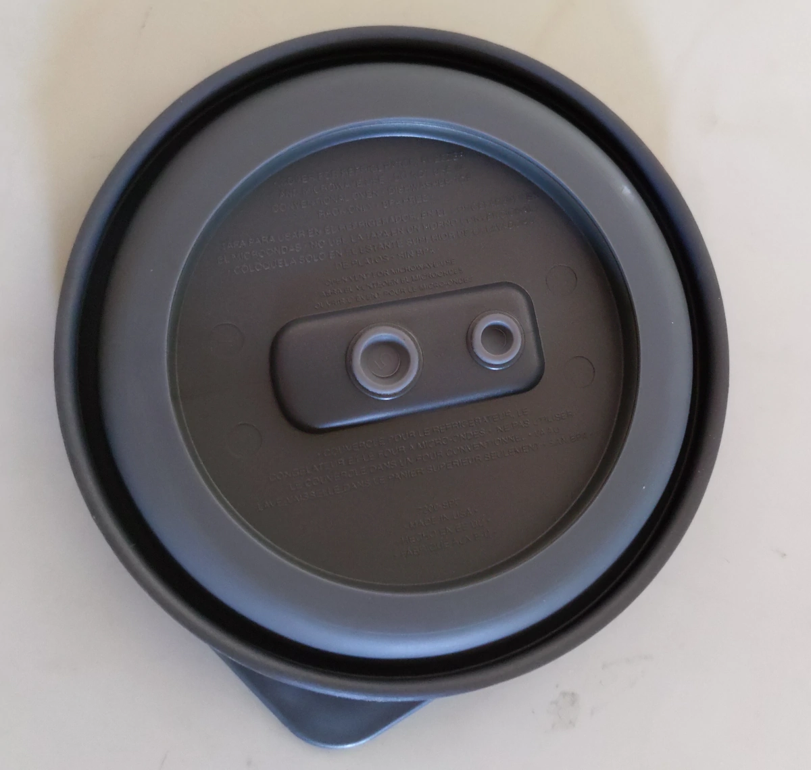
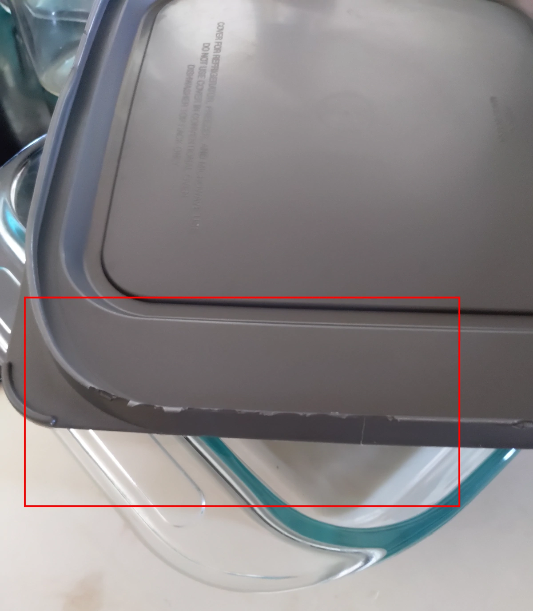
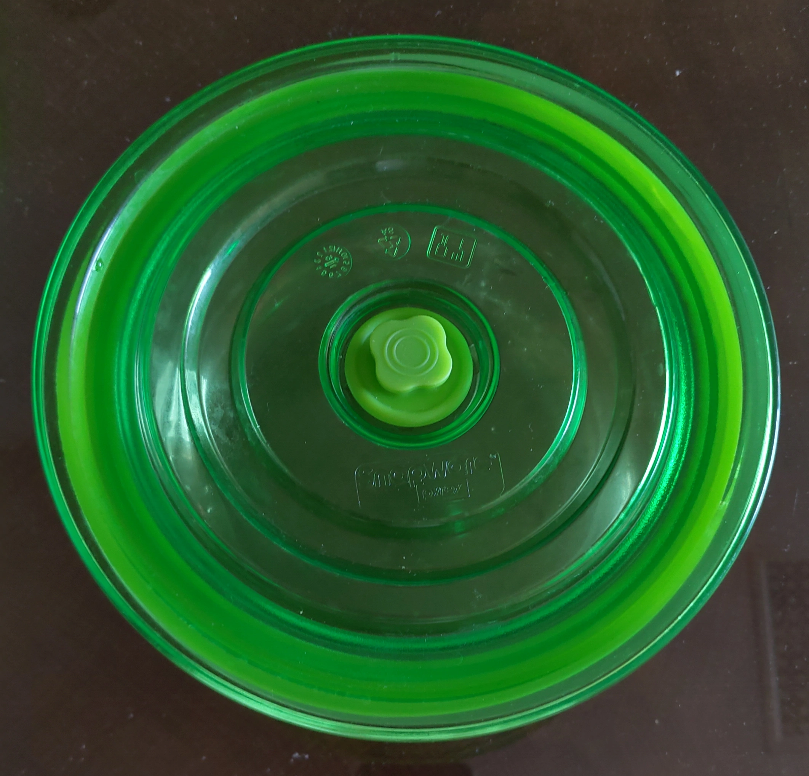
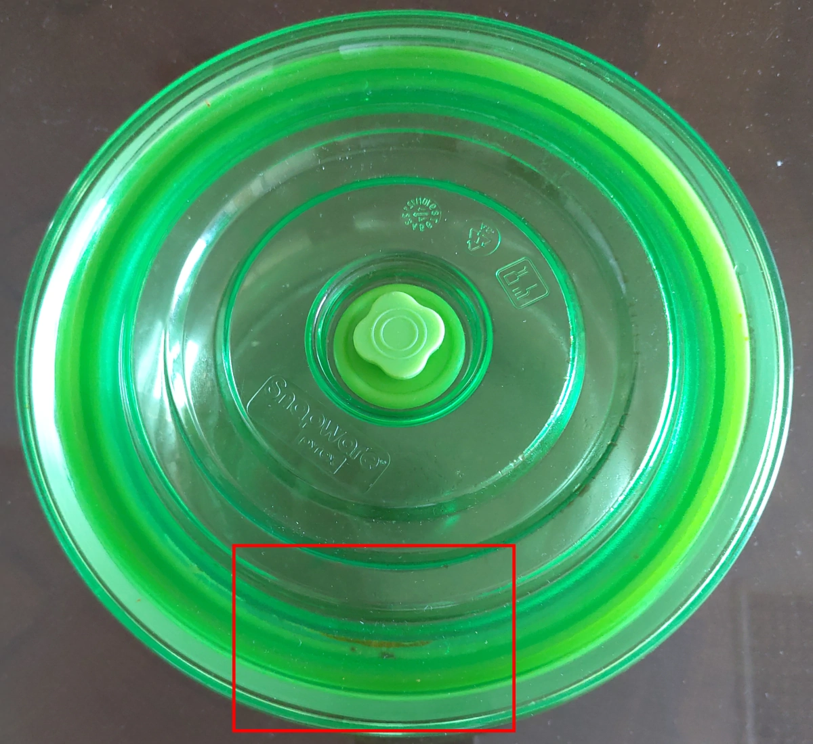
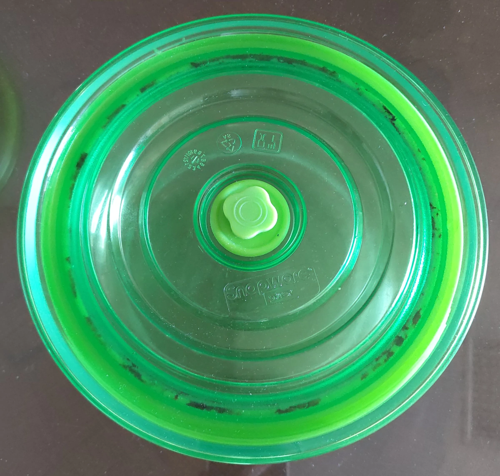
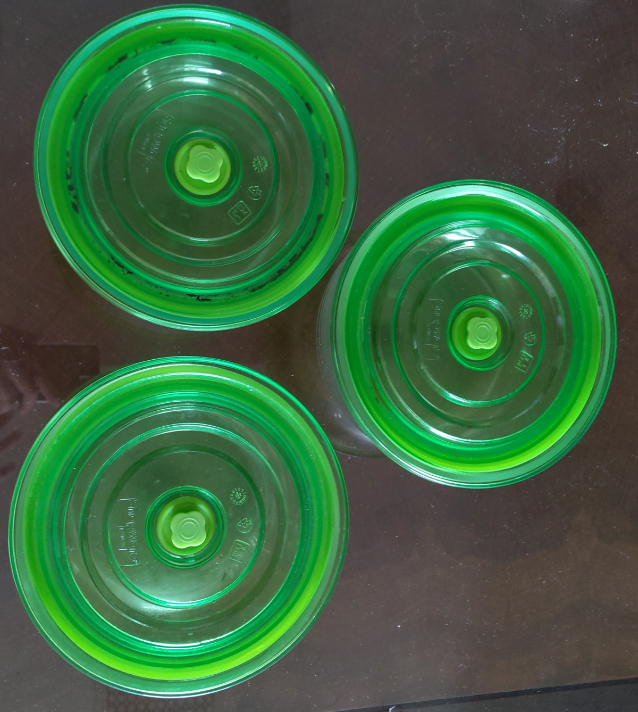

玻璃容器 特集
幾年前看到 Costco 賣的七個一組的 Pyrex 玻璃容器，就開啟了 隨車攜帶玻璃容器的習慣，吃飯都帶著，沒用到也沒關係。 然後，年紀大了，因為長期攜帶玻璃容器，漸漸地，容易失控點菜點很多， 然後用玻璃容器打包，回家吃個好幾天。即使點正常量，好像吃沒幾分鐘， 常常突然有飽的感覺，只想打包回家，悠閒地慢慢吃。似乎被制約了。
目前還沒試到完美的玻璃容器。先看 Pyrex 小的玻璃容器，中間那個圓圈 是可以拆下來清洗的，但是氣密程度普通，如果裝湯湯水水，容易漏出幾滴。 
大一點的玻璃容器，就沒那個拆下來的設計了，蓋子薄薄一層，多用幾次， 邊緣就開始一點一點毀損，呈鋸齒狀，直到不能用。我一個 1.6L 的圓形玻璃容器， 因為長期使用，它的蓋子第一個陣亡，沒蓋子就不能用啦。查原廠網站，可以買備品，可是台灣沒賣啊。 
後來陸陸續續打破幾個玻璃容器，這沒關係，總會有不小心的時候。 花點時間研究台灣引進的玻璃容器，發現 Snapware 系列能夠氣密， 而且那個塑膠蓋子堅硬，購物網站上又有幾種組合是剛好需要的大小， 所以補充了一些。長輩剛好也有送幾個 SnapWare 容器。一時之間， 好多 SnapWare 容器，車上、家裏、公司都能放幾個。
還剛好打破一個 1.5L 的SnapWare容器，老婆靈機一動，將 1.5L 的SnapWare 圓形蓋子裝到 Pyrex 1.6L 圓形玻璃容器，竟然接近密合，還好當初 東西都沒丟，又湊出一個可以用的了。
新買的Snapware玻璃容器像下面這樣，蓋子堅硬，中間按鈕 按下去， 整個就氣密了，蓋子這時候拉不起來。要中間按鈕拉起來，讓空氣 進去，蓋子就能輕鬆拉起了。 
本來以為Snapware 可以解決之前的問題，可是堅硬的蓋子，不能拆下來洗， 反而出問題。漸漸長出一些黑黑的東西。 
這是用最久的，那個黑黑的東西最多。 
三兄弟大合照，其中一個就是 Snapware 蓋子配 Pyrex玻璃容器。 
所以，那個黑黑的東西怎麼解呢? 網路上有幾位網友跟我同樣情形， 可是他們也沒解法解決。
經過網路搜尋，確定 基甸企業有限公司 就是台灣總代理。 它經營自己的電商網站，賣 Snapware 及很多其他的廚房用具。 可是 找不到可以客訴的地方，只能打電話。 它所經營的Facebook粉絲團都關了或 沒更新了。看起來就是一副只要沒客訴管道，就都不會有客訴的樣子。 大概是沒解吧，不然總代理早就製作一些網頁 教大家如何清潔了， 唉，繼續搜尋更好的玻璃容器了。